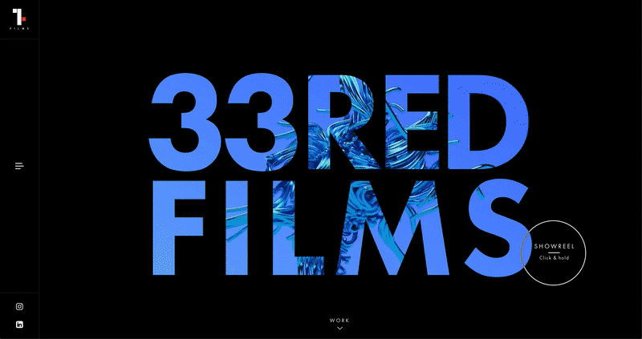
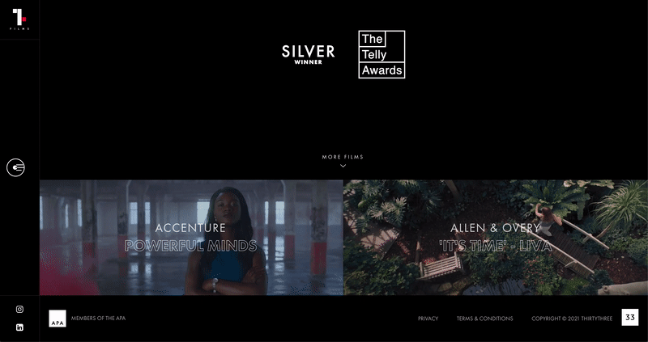
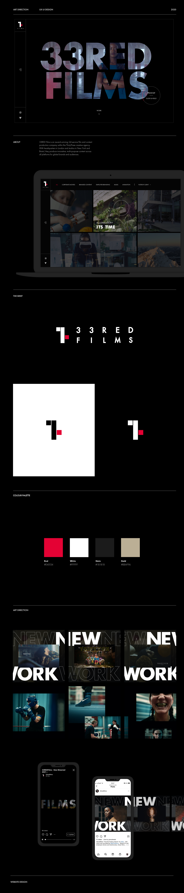
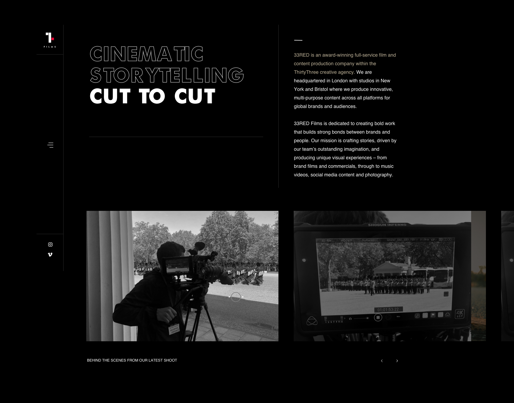
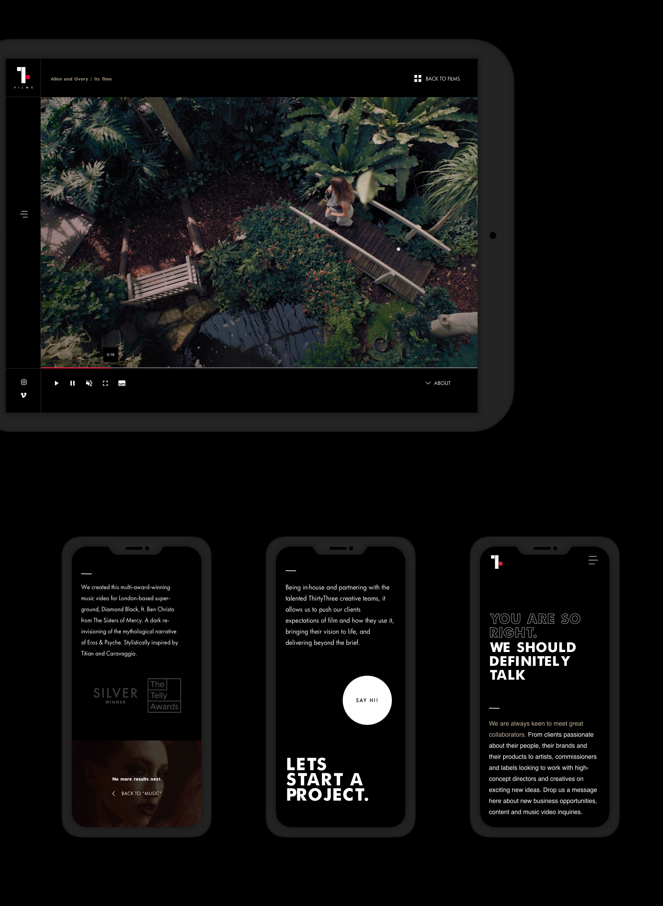

BRAND IDENTITY, WEBSITE DESIGN – UX, UI
A new digital brand and website for 33RED films
The brief
33RED films was taking a big step, from being an in-house video department to becoming it's own film and content production company. This is why I was tasked with the creation of an exciting, bold and refreshing brand image that would match their competitors both in and outside of employer branding, whilst removing the corporate edge. A digital look and feel that could be rolled out across a new website and social channels.



Our starting point was 33's iconic shape, the red square. We knew we wanted to create a dynamic brand, versatile to work in many different mediums and bold and eye-catchy to stand out from other film competitors.
The new website
We wanted the user to be able to discover who 33RED is through their work, so we created an interactive grid that was front and centre of the site that simulated a hub of an in-demand video app. We carried across our square shape to the website layout, creating a strong visual grid across all pages that added visual interest to the content and made use of animations that communicated 33RED's bold and energetic personality.



Role Lead Digital Designer
Responsibilities end-to-end website design (discovery, IA and sitemap, wireframing, design and prototyping)
Launch date 2020
Responsibilities end-to-end website design (discovery, IA and sitemap, wireframing, design and prototyping)
Launch date 2020